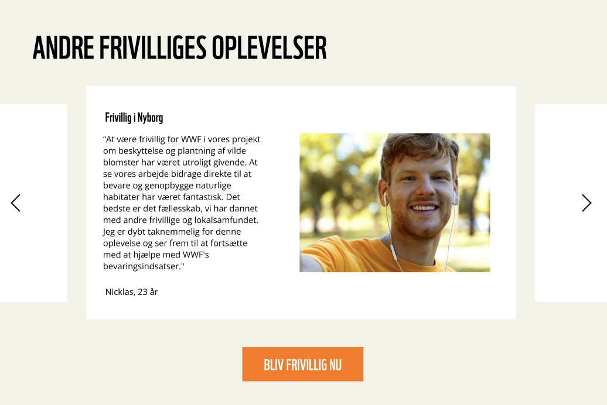
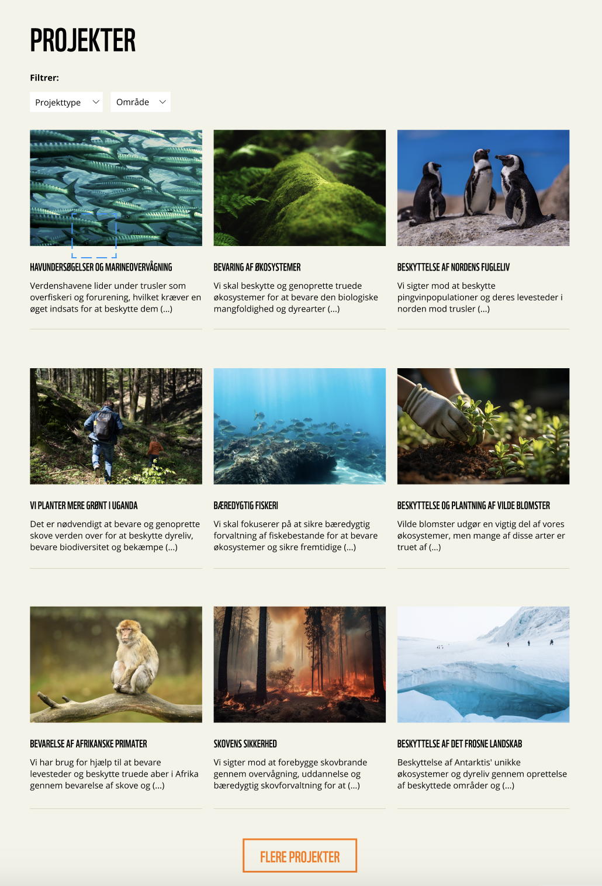
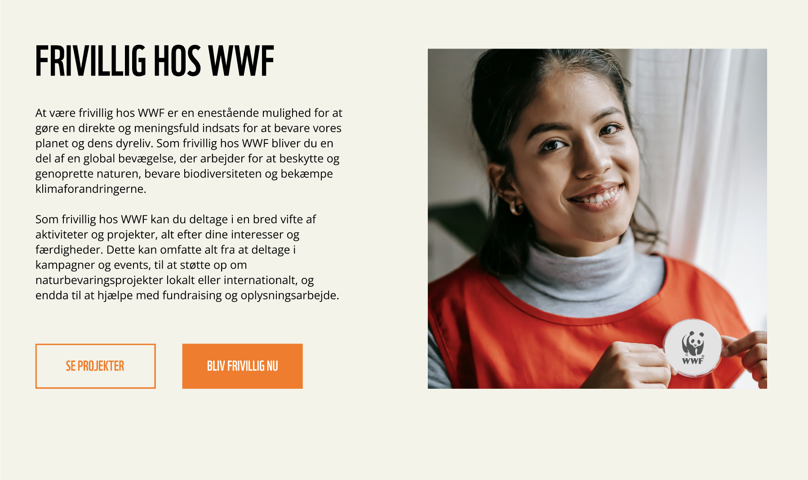
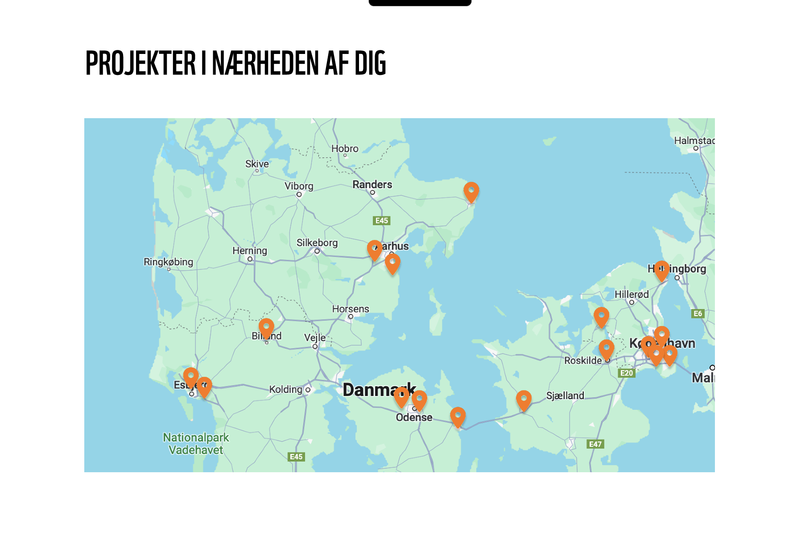
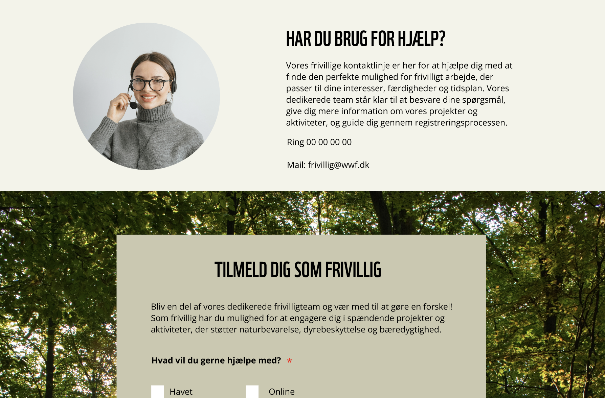
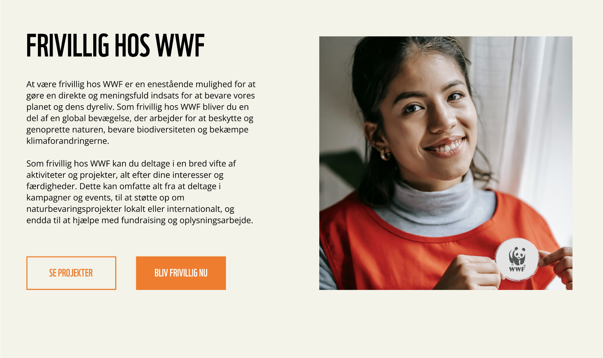
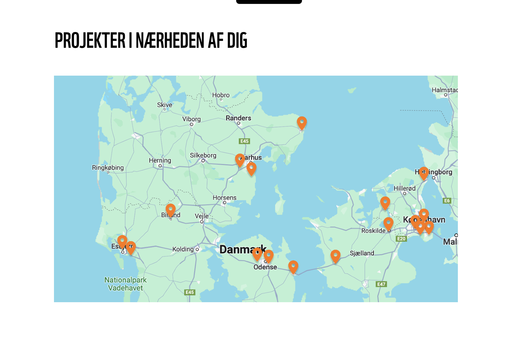
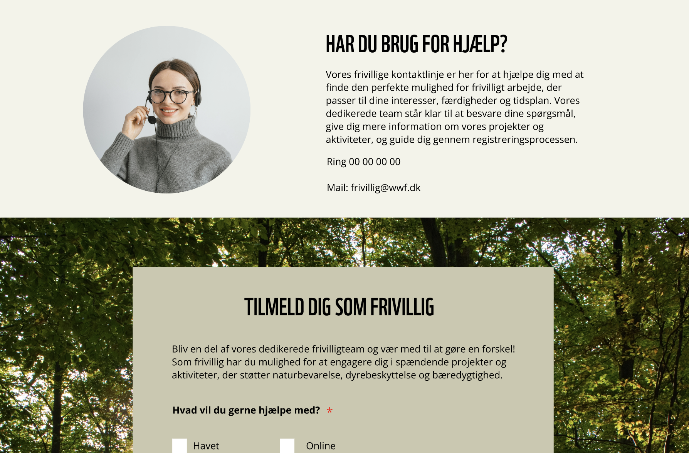

WWF Frivilligt arbejde
Digital platform, designet til at engagere unge i frivilligt arbejde

Problemstilling
Hvordan kan et digitalt værktøj hjælpe med at involvere unge mellem 20-25 år i et selvvalgt eksisterende velgørenhedsprojekt eller organisation?
Oversigt
Vi valgte at arbejde med WWF, da de ikke reklamerede med deres frivillige tilbud, men i stedet fokuserede på deres mission om at beskytte naturen og skabe bæredygtige løsninger. Det gav os mulighed for at arbejde med en organisation, der værdsætter handling frem for tomme løfter. Vores mål var at hjælpe dem med at nå ud til flere mennesker, uden at gå på kompromis med deres værdier, og samtidig skabe større opmærksomhed om deres arbejde på en autentisk måde.
Gennem vores research opdagede vi, at de fleste unge ikke havde tid til at engagere sig i længerevarende frivillige projekter. Derfor valgte vi at fokusere på kortere og mere fleksible projekter, som de nemt kunne ansøge om via platformen, for at gøre det lettere for de unge at bidrage, når det passede ind i deres hverdag, samtidig med at de stadig kunne gøre en forskel på en meningsfuld måde.

En central funktion blev en brugervenlig platform, hvor de unge nemt kunne finde og tilmelde sig projekter, der passede til deres tid og interesser, hvilket gjorde det lettere for dem at engagere sig aktivt i WWF’s arbejde. Det var også vigtigt at de unge følte de kunne være en del af et fællesskab når de tilmeldte sig som frvillig, og derfor inkooporerede vi blandt andet anmeldelser fra andre unge frivillige.
Resultat
Resultatet af projektet var en platform, der gjorde det langt nemmere for unge at engagere sig i WWF’s arbejde. Ved at tilbyde kortere og mere fleksible frivillige projekter tilpasset de unges travle hverdag, formåede vi at øge antallet af deltagere og skabe en større bevidsthed omkring WWF's mission. Den nye platform gav de unge mulighed for hurtigt at finde og tilmelde sig projekter, som passede til deres tid og interesser, hvilket ikke kun gjorde frivilligt arbejde mere tilgængeligt, men også styrkede WWF’s indsats for at beskytte naturen. Samarbejdet resulterede i en øget involvering og et tættere bånd mellem WWF og den yngre generation.

 




